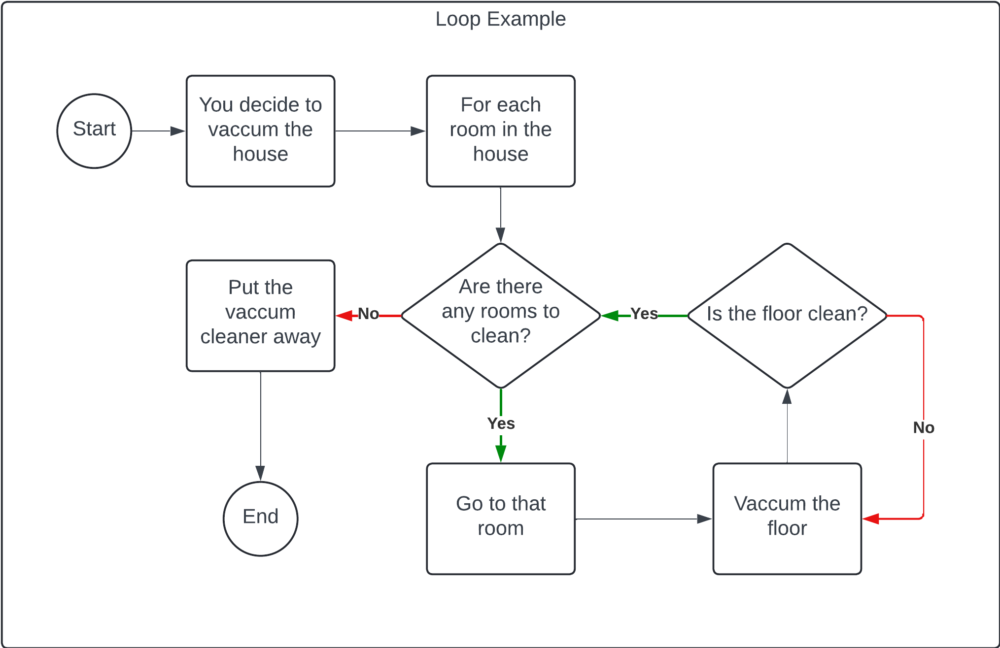

Think of a web application as a house
- HTML is the structure of the house, forming the walls, floors, and roof.
- CSS CSS is the paint, wallpaper, and decorations that make the house look appealing.
- JavaScript is everything functional, like the power, plumbing, and door locks.
Let's compare a specific function for a website to its real-world analogue:
Suppose a website has a field to enter your email and a button to send your email address to the server.
- The input field, label, and button are created with HTML
- They are then styled to look nice using CSS
- When you click the button, JavaScript takes your email address, sends it to the server, and displays a confirmation message. This message is displayed by editing some HTML on the form and styled with CSS
Now, consider your house:
- The wall would be an HTML element, painted with CSS
- The light switch would be the button
- When you flick the switch, a light turns on by completing a circuit and sending power to the bulb. This is analogous to JavaScript sending a message to the bulb to turn on
- The bulb turning on then lights up the wall, changing its appearance. This change is the JavaScript feedback, making the wall look brighter
Control Flows
Control flow in programming is like the sequence of steps you take to perform tasks in your house.
Example: Making Breakfast
In the following example we see the process of making breakfast as a control flow diagram. You can see logic like "Is there milk in the fridge?" and branches based on conditions in the diamonds.

Loops
Loops are like repeating tasks in your house. For example, you might vacuum the floor in a loop, moving from one room to the next until you have cleaned the whole house.
In the below example, you enter the loop at "For each room in the house". YOu enter the condition check, are there any rooms to clean? You then move to that room and clean it before returning and checking if any more rooms need to be cleaned.
In this example we can see a nested loop where we continue to clean a room until its clean.
So this example shows both a "For each" loop and a "Do while loop".
The DOM
The Document Object Model (DOM) is a representation of the structure of a webpage. It is a tree-like structure where each element is a node.
When you interact with a webpage, you are interacting with the DOM. For example, when you type into an input field, you are changing the value of a node in the DOM.
JavaScript can be used to manipulate the DOM, changing the structure of the webpage. For example, you could add a new element to the page, or change the text of an existing element.
The part of the DOM you would typically see are the innerHTML part of a node.
Arrays & Objects
Arrays and objects are two fundamental data structures in JavaScript, and they have different ways of storing and accessing data.
Arrays
Arrays are ordered collections of objects. An array can contain different kinds of objects and values. An array can be written to or read from using an index where 0 is the first object and 10 would be the 11th object.
When we create an array we write it like this:
let myArray[]
When we add an object to the array we write it like this:
myArray[0] = "Hello"
Now the first value of the array is the string value "Hello".
To read that value we can refer to the index
console.log(myArray[0])
And the console will log "Hello".
We can also use pop and push to add and remove objects in the array:
myArray.push("World")
Now the array has two values, "Hello" and "World".
console.log(myArray.pop())
Now the array has removed and written to console the last item; "World"
Objects
Objects are collections of key-value pairs. Each key is a string, and each value can be any type of object or value. Objects are unordered, so you can't access them by index like you can with arrays.
When we create an object we write it like this:
let myObject = {}
When we add a key-value pair to the object we write it like this:
myObject["key"] = "value"
Now the object has a key "key" with the value "value".
To read that value we can refer to the key
console.log(myObject["key"])
And the console will log "value".
Objects can also be made using blueprints which we call classes.
Classes contain blueprints for creating object with properties and their own self-contained functions.
This is how Object-Orientated-Programming works.
Functions
Functions are like the tools you use to perform tasks in your house. They are reusable blocks of code that can be called with different inputs to perform different tasks.
Functions can be written to take inputs and return outputs. They can also be written to perform tasks without returning anything.
They are good for reusable code that would otherwise require rewriting and updating. Instead of rewriting the same block of code each time, you can just call it.
Functions are important for using DRY (Don''t Repeat Yourself) principles.
Functions can be written like this:
function myFunction(){
console.log("Hello World")
}
And then called like this:
myFunction()
And the console will log "Hello World".